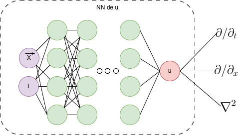

Physics-Informed Neural Networks (PINNs)
Juan Calles - juan.calles@uv.cl
Escuela de Física Teórica de Valparaíso
3 - 4 - 5 de Diciembre de 2025
Facultad de Ciencias y Edificio CIAE
Universidad de Valparaíso
1 Introducción
Las PINNs fueron introducidas en Physics Informed Deep Learning como un método que integra datos observacionales y ecuaciones físicas dentro de un mismo modelo. A diferencia de los enfoques numéricos tradicionales, que dependen de discretizaciones específicas para aproximar derivadas, y de los modelos de aprendizaje estándar, que se ajustan únicamente a datos, las PINNs incorporan las ecuaciones que describen el sistema en la función de costo (Loss). Esto permite que la red aprenda soluciones que respetan, de forma aproximada, la estructura diferencial y los datos disponibles del problema. La combinación de información física y datos resulta especialmente útil cuando estos últimos son costosos, irregulares o difíciles de obtener mediante observación o simulación.
2 The good
2.1 Cómo Funcionan las PINNs
En lugar de discretizar el espacio con una malla, una PINN propone que la solución física sea una función continua aproximada por una red neuronal, \(u_{\theta}(\mathbf{x}, t)\), que aproxima la solución de un sistema físico descrito por una ecuación diferencial. Su funcionamiento es una transformación de coordenadas: la red recibe una posición y un tiempo \((\mathbf{x}, t)\) y devuelve directamente el valor de la solución en ese punto. La red no almacena la solución, sino que la parametriza. Esto genera un mapeo continuo y diferenciable en todo el dominio, eliminando la dependencia de una malla fija.

Una ventaja técnica relevante proviene del uso de automatic differentiation, que permite evaluar derivadas de cualquier orden de \(u_\theta\) de manera exacta dentro del grafo computacional. La Figura ilustra un multi-layer perceptron, en línea discontinua, del cual podemos obtener gradientes ``gratis’’ durante el proceso de entrenamiento. Esto evita introducir esquemas de discretización para las derivadas y facilita incorporar directamente los operadores diferenciales que definen el problema físico.
Lo que distingue a una PINN no es la arquitectura de la red, sino cómo se “entrena”. En el aprendizaje automático tradicional, la red intenta memorizar y generalizar datos, minimizando el error entre predicción y los dato reales. En una PINN, cambiamos las reglas: le exigimos que ajuste los datos, pero penalizamos cualquier solución que viole las leyes de la física. Básicamente, introducimos explicitamente la Ecuación Diferencial dentro de la función de costo. Esto obliga a la red a encontrar una solución que no solo pase por los datos, sino que obedezca la dinámica del sistema. Esta información “adicional” puede introducirse a manera de ligaduras, leyes de conservación o ecuaciones de movimiento, entre otras formulaciones equivalentes.
Sin pérdida de generalidad, consideremos un sistema descrito por el operador diferenccial no-lineal \(\mathcal{N}\) \[ \mathcal{N}[u(\mathbf{x}, t)] = f(\mathbf{x}, t), \qquad \text{donde} \quad \mathbf{x} \in \Omega \;; \quad t \in [0, T] \,,\]
definido en un dominio \(\Omega\) y con condiciones de contorno e iniciales dadas por
\[ \rm{I.C:}\; u(\mathbf{x}, 0) = u_0(\mathbf{x}), \quad \mathbf{x} \in \Omega \,.\] \[ \rm{B.C:}\;\mathcal{B}[u(\mathbf{x}, t)] = g(\mathbf{x}, t), \quad \mathbf{x} \in \partial\Omega \,.\]
La innovación crucial de las PINNs consiste en definir una función de pérdida, \(\mathcal{L}\), que no busca únicamente ajustar datos, sino minimizar simultáneamente tres términos:
Error de Datos (\(\mathcal{L}_{data}\)): Cuantifica la discrepancia con las observaciones reales o simuladas (si existen). Para \(N_d\) puntos de observación: \[\mathcal{L}_{data} = \frac{1}{N_d} \sum_{i=1}^{N_d} |u_{\theta}(\mathbf{x}_i, t_i) - y_i|^2\,.\]
Error Físico o Residuo (\(\mathcal{L}_{PDE}\)): Este término actúa como una penalización para restringir el espacio de las soluciones físicamente aceptables. Definimos el residuo \(R_\theta\) como: \[R_\theta(\mathbf{x}, t) \equiv \mathcal{N}[u_\theta] - f,.\] Evaluamos este residuo en una nube de \(N_f\) puntos de colocación \((\mathbf{x}_j, t_j)\) distribuidos en el dominio y construyamos la correspondiente función de costo como un error cuadrático medio: \[\mathcal{L}_{PDE} = \frac{1}{N_f} \sum_{j=1}^{N_f} |R_\theta(\mathbf{x}_j, t_j)|^2,.\] Este procedimiento permite verificar el cumplimiento aproximado de la ecuación sin necesidad de discretizar derivadas.
Error en las condiciones de contorno e inicial (\(\mathcal{L}_{BC}, \mathcal{L}_{IC}\)): Penalizan las desviaciones en los bordes espaciales y el tiempo inicial: \[\mathcal{L}_{\rm{B.C.}} , \quad \mathbf{x} \in \partial\Omega,.\] \[\mathcal{L}_{\rm{I.C.}}, \quad t=0 ,.\] La forma específica de estos términos depende de las condiciones particulares del problema.
La función de costo total combina estos términos mediante pesos que regulan su contribución relativa:
\[ \mathcal{L}_{total} = \rm{w}_d\mathcal{L}_{data} + \rm{w}_p\mathcal{L}_{PDE} + \rm{w}_b(\mathcal{L}_{\rm{B.C.}}+\mathcal{L}_{\rm{I.C.}})\,,\]
siendo los pesos, \((\rm{w}_d, \rm{w}_p, \rm{w}_b)\), hiperparámetros definidos según las características del problema.
El entrenamiento utiliza algoritmos de gradiente (Adam o L-BFGS) para encontrar los parámetros \(\theta\) que minimicen \(\mathcal{L}_{total}\), equilibrando la fidelidad a los datos con la coherencia física del sistema.
2.2 Flujo de Entrenamiento de una PINN
El proceso de entrenamiento de una PINN puede visualizarse mediante el diagrama (Imagen generada por Nano Banana Pro)
El proceso puede describirse en cinco pasos esenciales:
Definir el problema físico. Seleccionar la PDE y las condiciones iniciales/de contorno que se desean modelar.
Identificar datos disponibles. Incorporar mediciones observacionales y cualquier información parcial del sistema.
Diseñar la arquitectura. Elegir una red adecuada (MLP, ResNet, CNN, etc.).
Construir la función de pérdida. Combinar error de datos y residuo físico obtenido por diferenciación automática.
Optimizar la red. Entrenar los parámetros mediante métodos como Adam o L-BFGS hasta obtener una solución que satisfaga simultáneamente datos y física.
3 The old
La resolución de sistemas físicos descritos por ecuaciones diferenciales parciales no-lineales se ha basado históricamente en métodos numéricos como diferencias finitas, elementos finitos y volúmenes finitos, acoplados a esquemas de integración temporal como Runge-Kutta. Estos enfoques son eficaces, pero dependen rígidamente de la discretización del dominio (mallas). En geometrías complejas o alta dimensionalidad, la generación y refinamiento de estas mallas condiciona la estabilidad de la solución y eleva el costo computacional exponencialmente, limitando su capacidad para capturar dinámicas multiescala.
El desafío se agudiza en los problemas inversos, en los cuales la estimación de parámetros internos o la recuperación de campos desconocidos requiere invertir operadores diferenciales que suelen ser mal condicionados. En estos casos, los métodos clásicos dependen de técnicas adicionales de regularización para evitar soluciones espurias.
Las PINNs ofrecen un enfoque alternativo al evitar la necesidad de discretizaciones rígidas. Al trabajar directamente con una representación continua de la solución, permiten evaluar el modelo en cualquier punto del dominio sin depender de una malla fija. En problemas inversos, los parámetros desconocidos pueden incluirse como variables entrenables, lo que permite estimarlos junto con el campo de solución sin modificar la formulación general del método.
Es importante recalcar que las PINNs no reemplazan de manera universal a los métodos clásicos. Su rendimiento depende del tipo de ecuación, la dimensionalidad del problema y la estrategia de entrenamiento. En ciertos casos, los métodos tradicionales siguen siendo más eficientes o más estables, especialmente cuando se dispone de mallas bien construidas y suficientes datos.
4 The bad
Las PINNs presentan varias limitaciones que aún restringen su desempeño frente a métodos numéricos tradicionales. En muchos problemas, su precisión es inferior a la alcanzada por esquemas de alto orden, lo que evidencia una brecha sistemática de exactitud. Además, su entrenamiento suele ser inestable debido al sesgo espectral, por el cual la red aprende con rapidez los modos de baja frecuencia pero converge con dificultad hacia componentes de alta frecuencia, comprometiendo la calidad de la solución.
A diferencia de métodos como el de Diferencias Finitas, las PINNs carecen de garantías teóricas de convergencia y de estimaciones rigurosas del error. Esto dificulta evaluar si la solución obtenida es físicamente consistente o si el entrenamiento quedó atrapado en un mínimo local. El costo computacional también es considerable: la evaluación de derivadas mediante automatic differentiation incrementa de forma significativa el tiempo de entrenamiento en comparación con una simulación numérica directa.
Finalmente, las PINNs requieren conocer explícitamente las ecuaciones del sistema. En ausencia de un modelo físico bien establecido, su aplicación estándar resulta limitada, aunque existen extensiones híbridas orientadas al descubrimiento de ecuaciones a partir de datos.
4.1 ¿Qué otras cosas podemos hacer?
PINNs Bayesianas B-PINNs: Las B-PINNs tratan los pesos de la red neuronal como distribuciones de probabilidad en lugar de valores fijos. Esto permite que la red produzca tanto una predicción como una estimación de incertidumbre (intervalos de confianza), lo cual es crucial para la comparación experimental.
PINNs Variacionales V-PINNs: En lugar de minimizar el residuo de la EDP (forma fuerte), las V-PINNs utilizan la forma débil de la EDP (similar al FEM), integrando las ecuaciones contra funciones de prueba. Esto las hace más robustas frente a datos ruidosos y más capaces de manejar soluciones de baja regularidad.
Symbolic PINN PISN:
…
5 Referencias
- Physics Informed Deep Learning (Part I): Data-driven Solutions of Nonlinear Partial Differential Equations
- Scientific Machine Learning through Physics-Informed Neural Networks: Where we are and What’s next
- AN EXPERT’S GUIDE TO TRAINING PHYSICS-INFORMED NEURAL NETWORKS
Papers de ML en física:
Algunos cursos online recomendados:
- Physics Informed Machine Learning: High Level Overview of AI and ML in Science and Engineering - Steve Brunton
- CAMLab-youtube
En el area de Gravitactión y Cosmología:
- Symbolic Regression Is All You Need: From Simulations to Scaling Laws in Binary Neutron Star Mergers
- Cosmology-informed Neural Networks to infer dark energy equation-of-state
- EINSTEIN FIELDS: A NEURAL PERSPECTIVE TO COMPUTATIONAL GENERAL RELATIVITY
- Advancing Cosmological Simulations of Fuzzy Dark Matter with PINN
- AInstein: Numerical Einstein Metrics via Machine Learning
- Quasinormal Modes in Modified Gravity using PINN
- PINNferring the Hubble Function with Uncertainties
- Solving the Regge-Wheeler and Teukolsky equations: supervised versus unsupervised PINN
- Solving Einstein equations using deep learning
- Gradient-Annihilated PINNs for Solving Riemann Problems: Application to Relativistic Hydrodynamics
- Solving the Teukolsky equation with PINN